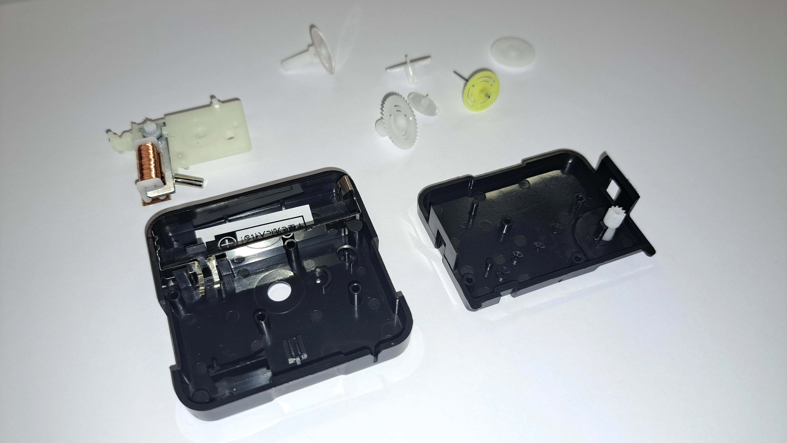

The one where I perform surgery on a clock

The direction of yesterday
I created a website that allows you to locate temporal phrases on a cube, and add your own as well. It is subjective in a sense that you are the one who decides where to place it, where are its coordinates.
Just like this very website and "the archive of felt time", I created my own wireframes on Figma and brought it over to Claude to help me figure out the heavy lifting. Even at this stage it feels like cheating!
View my website here, but I'm afraid its not updated yet.
The destruction of the 24-hour clock
This series of experiments will help me to understand what aspect of the making of the 24 hour clock affects the reader's perception the most. Factors include: clock hands, clock face, clock numbers, clock shape etc.
01
Changing angles at
which the hands rotate
let secondAngle = map(second(), 68, 60, 0, 360);
let minuteAngle = map(minute(), 91, 60, 0, 360);
let hourAngle = map(hour(), 10, 12, 0, 360);
// change values of the first value (random number generator)
let secondAngle = map(second(), 70, 60, 0, 360);
let minuteAngle = map(minute(), 93, 60, 0, 360);
let hourAngle = map(hour(), 7, 12, 0, 360);
// change values of the first value (random number generator), second iteration
let secondAngle = map(second(), 70, 60, 0, 360);
let minuteAngle = map(minute(), 93, 60, 0, 360);
let hourAngle = map(hour(), 7, 12, 0, 360);
// change values of the first value (random number generator), third iteration
02
Changing the number of clock hands
03
Changing the length of clock hands
04
Changing the position of the clock hands
05
Changing clock interface
06
Changing the motion of the clock face
Physically destroying that clock
In addition to digital experiments, I thought of presenting its mangled form physically. Could this affect the way its perceived? Could this also be a possible FYP outcome? These experiments had the same aim as the digital ones, but were physical as I wanted to present something physical this week...Also wanted to put that single hole puncher to good use!
Piecing together a really budget speculative film
Based on feedback from last week, I pieced together a really quick speculative film that roughly encapsulates the storyline that I want to show for the final. This is definitely not the final product, I probably won't be the one acting, but this would help me in figuring out the story flow as well as the shot angles.
Through this short film, I thought of establishing the fictitious world we find ourselves in with the context of the 'clockadoodledoo'. How does the clock work? How do we interact with it? Like Edward Hall says, time speaks. So how we weave it into our conversations matter, thus I really wanted to show how we would converse with it in this fictitious universe.
Feedback
I think the feedback was positive in terms of the variations of experiments, particularly for the destruction of the clocks—which could even be part of the workshops. But mostly I kept thinking, what do these makings lead to? Are they a part of the dissertation experimentations?
This whole week can be summed up in the gif—its me while reading my little 'chats' with Claude while refining my research goals. While starting to write my dissertation, and trying to define my goals, I have come to the sobering realisation that my research outline was something that I don't really want to do...༼;´༎ຶ ༎ຶ༽... But we have to move on. I think its my 10th time saying this (in the past 3 weeks) but I'm still feeling...wait for it...LOST. But after (as I hate to admit it) chatting with Claude and refining the questions for my guerilla workshop, I am feeling abit more hopeful. I hope I can extract some really juicy answers that can push this project forward or I shall continue feeling lost. I also need to be more decisive, and really get to the heart of what I want to do. Perhaps I'll do a pros and cons list or something. Mindmaps are useless to me now.